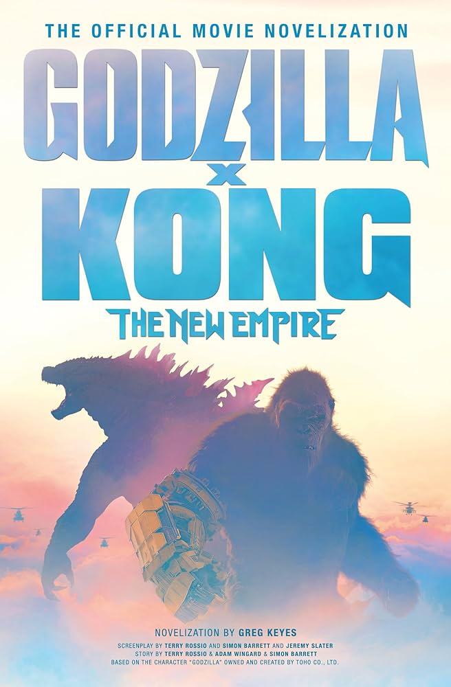

Новинки 2024 года
| Жанр: | фантастика, боевик |
| Дата выхода: | 2024 |
| Режиссёр: | Адам Вингард |
| Продолжительность: | 115 мин./01:55 |
| Бюджет: | $160 362 286 |
| Премьера в мире: | 27 марта 2024 |
| Сценарий: | Джереми Слейтер, Терри Россио, Саймон Баррет |
| Продюсер: | Закария Алауи, Джей Эшенфелтер, Ёсимицу Банно |
| Композитор: | Антонио Ди Иорио, Junkie XL |
| Художник: | Томас Хэммок, Абделла Ачир, Рави Бансал |
Сиквел фильма «Годзилла против Конга» (2021), пятый фильм в медиафраншизе «MonsterVerse» компании Legendary Pictures, 38-й фильм франшизы «Годзилла (англ.)рус.», 13-й фильм франшизы «Кинг-Конг (англ.)рус.» и пятый фильм о Годзилле, полностью снятый американской киностудией. В фильме снимались Дэн Стивенс, Ребекка Холл, Брайан Тайри Генри, Кэйли Хоттл (англ.)рус. и Чэнь Фала (англ.)рус..
Благодаря кассовому успеху фильма «Годзилла против Конга» во время пандемии COVID-19, в марте 2022 года кинокомпания Legendary объявила о создании сиквела и о том, что съёмки начнутся в конце года. В мае 2022 года стало известно, что Вингард вернётся в качестве режиссёра, а Дэн Стивенс исполнит главную роль. Съёмки начались в июле 2022 года в Голд-Косте и завершились в ноябре того же года.